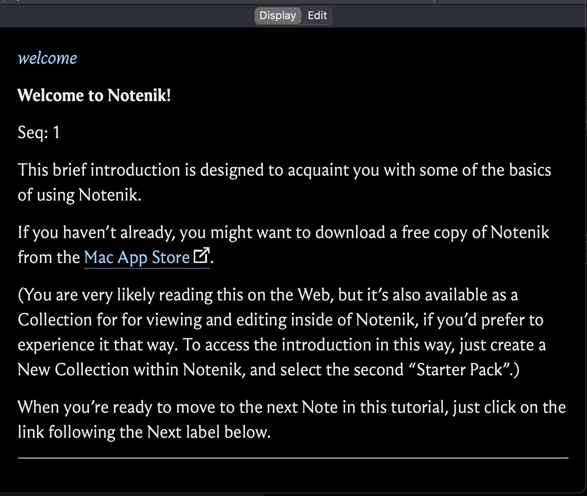

7 The Display Tab
If you turn your attention to the right side of the Collection window, then the first tab you’ll see is titled Display.
In general, the Display tab will show all of the non-blank fields contained within the current Note.
If you are using the Streamlined Reading option, though, then some non-blank fields will also be suppressed as well, in order to focus more attention on the Title and Body of each Note.
If you open up the Collection Settings again, you’ll find a couple of other options you can use to tailor the appearance of the Display tab.
Include explicit Body field label for Note? – By default, Notenik treats the Body field like any other field, and displays the field label preceding the field value. If you’d rather not see any explicit identification of the Body field, then you can uncheck this option.
Note Title Display – You can choose from one of these options to see each Note’s Title in a differentiated font.
If you look in the Toolbar at the top of the window, you’ll see a button labeled Display Fonts. Click on this, and you’ll see a separate window that will allow you to tailor the font family and size used on the Display tab. In fact, if you know a little bit about CSS, then you can enter your own custom CSS in this window. (If not, just select your options at the top of this window, then click Generate CSS.)
Note that these Display Preferences apply globally to all of your Collections, and not just the Collection you are currently viewing.
Next: The Edit Tab